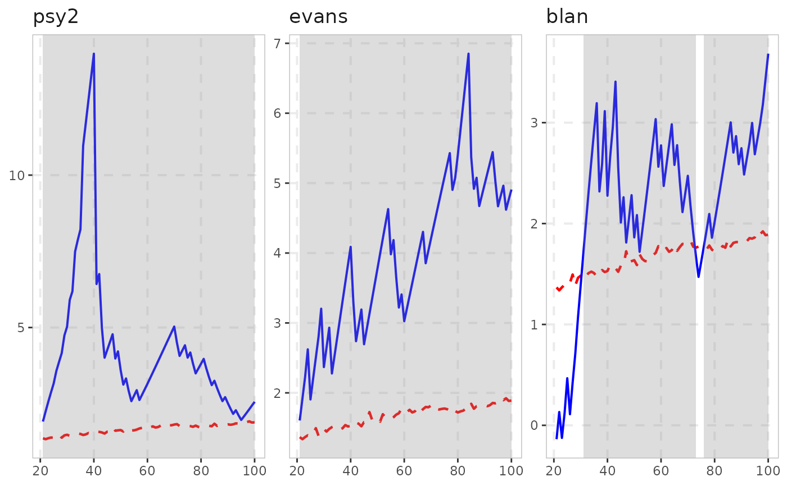

radf_sign computes Harvey, Leybourne & Zu (2020)'s sign-based
variant of the recursive right-tailed unit root test: instead of
applying the (double-)supremum ADF test directly to the series, it is
applied to the cumulated sign of its first differences,
C_t = sum(sign(diff(y))). Because sign() strips out all
magnitude information, C_t's recursive DF statistic is exactly
invariant to the pattern of (even time-varying) volatility in the
innovations – unlike radf, no wild bootstrap is needed to
control size under heteroskedasticity; radf_sign_cv's
critical values are pivotal, computed once rather than per dataset.
Arguments
- data
A univariate or multivariate numeric time series object, a numeric vector or matrix, or a data.frame. A column may have leading and/or trailing
NAvalues (an uneven/unbalanced panel where series enter or exit the sample at different times) – those periods are filled withNAinbadf/bsadfand excluded from that series'adf/sadf/gsadf. InteriorNAvalues (a gap in the middle of a series) are not supported. When any series is padded this way, the panel statistic (bsadf_panel/gsadf_panel) is not available and is returned asNA, with a warning.- minw
A positive integer. The minimum window size (default = \((0.01 + 1.8/\sqrt(T))T\), where T denotes the sample size).
Details
The cost of this invariance is power: the paper finds the sign-based
test outperforms the standard PSY test for many time-varying-volatility
and bubble specifications, but not all – the standard test can still
win for some. The paper's own recommended practical strategy is a
bootstrap-based union-of-rejections combining both tests, which is
not implemented here (see the package's enhancement notes for
the cost/benefit reasoning); this function provides the standalone
sign-based test only. sadf is the single-supremum (r1 = 0
fixed) sPWY statistic; gsadf is the double-supremum sPSY
statistic.
Note
Needs radf_sign_cv for critical values, not
radf_wb_cv or any other bootstrap – the statistic is
pivotal (exactly invariant to heteroskedasticity), so its critical
values are simulated once, not per dataset.
Carries the radf_obj class and, as of 2026-08-18, its full
summary()/datestamp/tidy/autoplot
pipeline works – radf_sign_cv() now computes the time-varying
badf_cv/bsadf_cv boundary those last two need, not just
the three scalar critical values summary() uses. See
vignette("naming-and-analysis", package = "exuber").
Level-shift robustness
Harvey, Leybourne, Tatlow & Zu (2025) show this test also retains its
standard (no-level-shift) null distribution in the presence of
deterministic level shifts, provided the number of shifts grows
strictly slower than sqrt(T) – regardless of how large the
shifts are. This is a materially weaker requirement than the standard
PSY test needs for its own size control, which restricts the number
and the magnitude of shifts jointly; in their simulations the
standard test is never correctly sized once the number of shifts grows
at rate sqrt(T), while this test stays close to nominal size.
![[Experimental]](figures/lifecycle-experimental.svg)
References
Harvey, D. I., Leybourne, S. J., & Zu, Y. (2020). Sign-based unit root tests for explosive financial bubbles in the presence of deterministically time-varying volatility. Econometric Theory, 36(1), 122-169.
Harvey, D. I., Leybourne, S. J., Tatlow, D., & Zu, Y. (2025). Unit root tests for explosive financial bubbles in the presence of deterministic level shifts. Oxford Bulletin of Economics and Statistics, 87(5), 879-901. doi:10.1111/obes.12668
See also
radf_sign_cv for critical values,
radf_sign_dm for the recursively demeaned sign-based
analogue (sharing the same level-shift robustness), and radf
for the standard (non-invariant) test.
Examples
# \donttest{
res <- radf_sign(sim_data, minw = 20)
print(res)
#>
#> ── radf_sign (minw = 20) ───────────────────────────────────────────────────────
#>
#> series adf sadf gsadf
#> psy1 -0.1516 0.9367 2.021
#> psy2 2.5578 6.4212 13.985
#> evans 4.8486 5.7582 6.852
#> div 1.1346 2.7920 2.950
#> blan 3.3805 3.3805 3.684
#>
cv <- radf_sign_cv(n = 100, minw = 20)
summary(res, cv = cv)
#>
#> ── Summary (minw = 20, lag = 0) ──────────────── Sign-Based MC (nboot = 2000) ──
#>
#> psy1 :
#> # A tibble: 3 × 5
#> stat tstat `90` `95` `99`
#> <fct> <dbl> <dbl> <dbl> <dbl>
#> 1 adf -0.152 0.868 1.35 2.16
#> 2 sadf 0.937 2.23 2.62 3.43
#> 3 gsadf 2.02 2.89 3.34 4.57
#>
#> psy2 :
#> # A tibble: 3 × 5
#> stat tstat `90` `95` `99`
#> <fct> <dbl> <dbl> <dbl> <dbl>
#> 1 adf 2.56 0.868 1.35 2.16
#> 2 sadf 6.42 2.23 2.62 3.43
#> 3 gsadf 14.0 2.89 3.34 4.57
#>
#> evans :
#> # A tibble: 3 × 5
#> stat tstat `90` `95` `99`
#> <fct> <dbl> <dbl> <dbl> <dbl>
#> 1 adf 4.85 0.868 1.35 2.16
#> 2 sadf 5.76 2.23 2.62 3.43
#> 3 gsadf 6.85 2.89 3.34 4.57
#>
#> div :
#> # A tibble: 3 × 5
#> stat tstat `90` `95` `99`
#> <fct> <dbl> <dbl> <dbl> <dbl>
#> 1 adf 1.13 0.868 1.35 2.16
#> 2 sadf 2.79 2.23 2.62 3.43
#> 3 gsadf 2.95 2.89 3.34 4.57
#>
#> blan :
#> # A tibble: 3 × 5
#> stat tstat `90` `95` `99`
#> <fct> <dbl> <dbl> <dbl> <dbl>
#> 1 adf 3.38 0.868 1.35 2.16
#> 2 sadf 3.38 2.23 2.62 3.43
#> 3 gsadf 3.68 2.89 3.34 4.57
#>
tidy(res, cv = cv)
#> # A tibble: 5 × 4
#> id adf sadf gsadf
#> <fct> <dbl> <dbl> <dbl>
#> 1 psy1 -0.152 0.937 2.02
#> 2 psy2 2.56 6.42 14.0
#> 3 evans 4.85 5.76 6.85
#> 4 div 1.13 2.79 2.95
#> 5 blan 3.38 3.38 3.68
datestamp(res, cv = cv)
#>
#> ── Datestamp (min_duration = 0) ─────────────────────────────── Sign-Based MC ──
#>
#> psy2 :
#> Start Peak End Duration Signal Ongoing
#> 1 21 40 100 80 positive TRUE
#>
#> evans :
#> Start Peak End Duration Signal Ongoing
#> 1 21 84 100 80 positive TRUE
#>
#> blan :
#> Start Peak End Duration Signal Ongoing
#> 1 31 43 73 42 negative FALSE
#> 2 76 100 100 25 positive TRUE
#>
autoplot(res, cv = cv)

# }